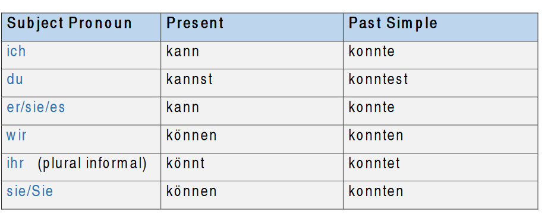
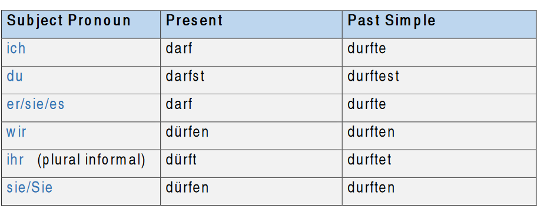
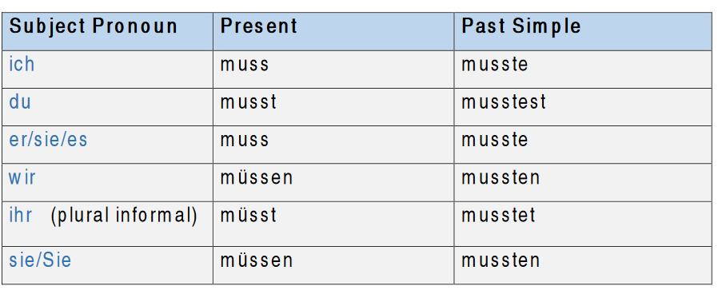
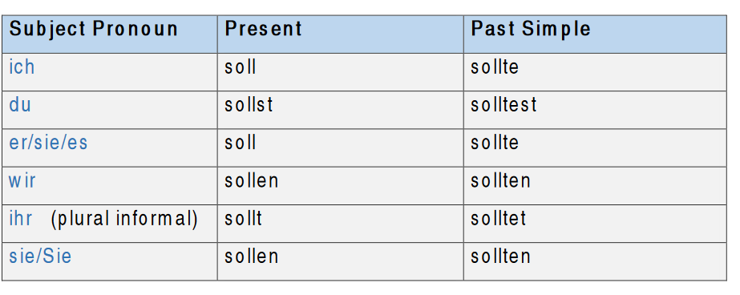
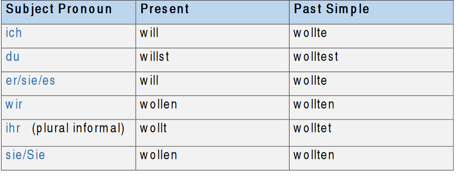
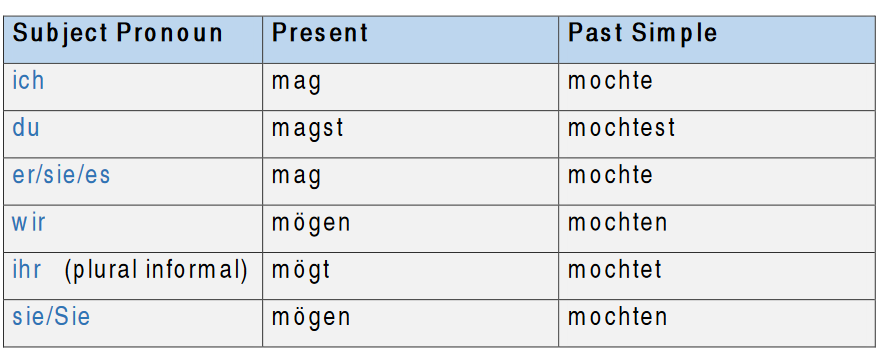

Modal verbs - Modalverben
What are modal verbs in German?
Modal verbs used to ask for permission or to express possibility, ability, necessity, etc. They are used as auxiliary verbs (helping verbs) with the main verb of the
sentence together such as ‘must’ and ‘should’ in English.
The modal verb comes always in the second position, conjugated according to the subject and the main verb goes to the end of the sentence in infinitive form.
e.g. Ich kann nicht Englisch sprechen. (I cannot speak English)
Here we only conjugate the modal verb in the second position.
There are 6 modal verbs in German:
- Können (can/ to be able to)
Beispiel:
Ich gut Deutsch sprechen. (I can speak German well.) Wegen des Wetters konnten wie nicht fahren. (We couldn't drive because of the weather.)
Conjugated as follows:

- dürfen (may/ to be allowed to)
Beispiel:
Hier darf man nicht rauchen. (It is not allowed to smoke here.)
Er durfte nicht Pause machen. (He wasn't allowed to take a break.)
Conjugated as follows:

- müssen (to have to/must)
Beispiel:
Ich muss morgen früh aufstehen (I have to wake up early)
Er musste nach Hause gehen (He had to go to home)
Conjugated as follows:

- sollen (should, to be supposed to)
Beispiel:
Sara soll zu Hause bleiben, denn sie ist Krank
(Sara should stay at home because she is sick)
Du solltest nicht so viel essen (You shouldn't eat so much)
Conjugated as follows:

- wollen (want to)
Beispiel:
Ich will Deutsch lernen. (I want to learn German)
Das Kind wollte abends nicht ins Bett gehen
(The child did not want to go to bed at night)
Conjugated as follows:

- mögen (to like)
Beispiel:
Ich mag Kaffee trinken. (I like drinking coffee.)
Conjugated as follows:
